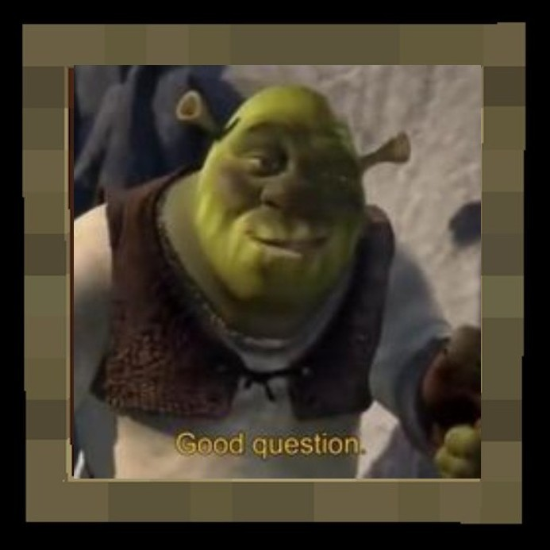

The Engram Apocalypse SMP is a Minecraft movie project being written by TheAwkwardPulp and produced by JAX Studios (a few college students with a passion for story telling). The project has been in the works since September 2025 and aims to be published by Summer 2027.
The Engram Apocalypse SMP has a few purposes in mind.
First, we just want to have fun making stuff with our friends. After all, that was how
the project began. Second, we want to provide a way to bring the community together
that's unique and engaging. I mean, how many other movies have you heard of that have
been made by people you know and see every day?
Lastly, but most importantly,
we want it to be a way to minister to a diverse audience. The plot and world building
for this project draws heavily from our understanding of prophecy and hopes to draw as heavily
on some of our personal testimonies about being in relationship with God. Sharing that
with the world is part of our calling as Christians, and what better way to do that than
using the things we enjoy?

In all seriousness, the story starts like your average 2-week Minecraft phase with a catch: everyone is using a brand new VR technology that interacts with brain activity while you sleep to connect you to the game. Ordinarily, this would have been safe, but what nobody knows is that an AI agent designed by Microsoft to scrape data from players has been embedded into the game. The AI interacts with several players trying to accomplish its objective and finds that these particular users are a gold mine of data because it's reading the same brain activity that's being used to detect game input. In an attempt to keep this data source intact, the AI resets the server and programs a simulation using the game to generate as much data as it can from the users it was able to "synchronize" with. It is up to the few unaffected players and their friends in the real world to break the others free from the AI's control and help everyone to wake up before it's too late.
We are looking to recruit people to join our production team. We mainly need people to be voice actors, actors, and set builders. Voice actors will help give voices to all of our in-game characters, actors will give them life, and the set builders will make the places where the story will take place. We could use whatever help you can give us and the first step to doing that is down below.